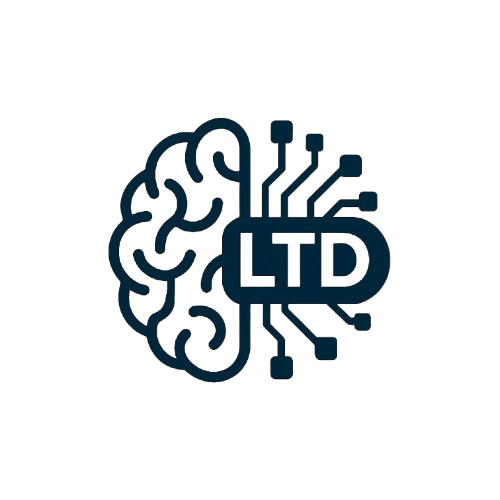
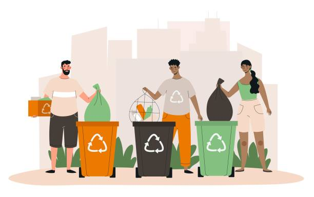
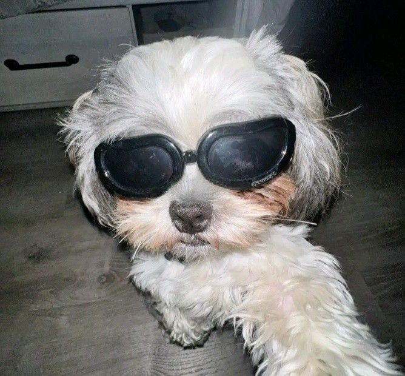
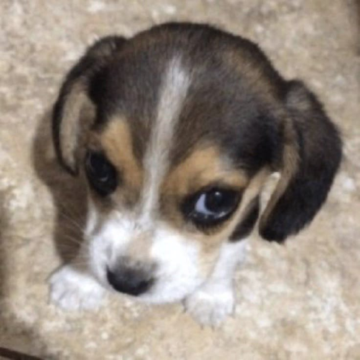

Projeto Coleta Seletiva
Projeto LTD (Laboratório de Transformação Digital) tem como missão incentivar a população de Belém a adotar práticas sustentáveis no cotidiano, com foco na separação correta dos resíduos sólidos através da coleta seletiva. A proposta busca não apenas melhorar a gestão de resíduos urbanos, mas também fomentar uma cultura de consciência ambiental, essencial para o desenvolvimento sustentável das cidades.
As lixeiras de coleta seletiva, quando corretamente distribuídas e utilizadas, são ferramentas simples mas extremamente eficazes. Elas possibilitam a separação dos resíduos recicláveis (papel, plástico, metal e vidro) e orgânicos, evitando a contaminação cruzada e facilitando o reaproveitamento de materiais. Isso reduz a quantidade de lixo enviada a aterros sanitários, que frequentemente operam em condições precárias, ao mesmo tempo em que mitiga os impactos ambientais, como a emissão de gases poluentes (como o metano) e a poluição de rios e solos.


O Projeto LTD propõe que o governo municipal de Belém invista na ampliação da infraestrutura de coleta seletiva, com instalação de lixeiras em praças, parques e pontos estratégicos, promovendo o descarte consciente em locais de grande circulação. Para ampliar o alcance e a eficácia da iniciativa, o projeto inclui um site interativo com as seguintes funcionalidades:
Diálogo com a COP30 e a Agenda Climática Global
O lançamento e fortalecimento do Projeto LTD ocorrem em um momento extremamente estratégico para a cidade de Belém: a realização da COP30 (Conferência das Nações Unidas sobre Mudanças Climáticas), marcada para novembro de 2025, sendo, a primeira vez que o evento será sediado na Amazônia.
A COP30 será uma das mais relevantes da história, pois ocorrerá em um ponto crítico da luta contra as mudanças climáticas. É nela que os países devem apresentar revisões ambiciosas de suas metas climáticas (as NDCs - Contribuições Nacionalmente Determinadas), conforme previsto no Acordo de Paris. O objetivo global é limitar o aumento da temperatura média do planeta a no máximo 1,5°C, evitando os piores cenários de crise climática.
Nesse cenário, Belém se torna vitrine mundial, e o mundo estará observando como uma cidade da Amazônia se posiciona em relação aos desafios ambientais. Projetos como o LTD reforçam a ideia de que ações locais são fundamentais para o sucesso global. A separação e reaproveitamento correto de resíduos ajuda a:
Além disso, o Projeto LTD pode dialogar com políticas públicas discutidas durante a COP30, como:
Conheça a equipe!

Alexandre Abreu
Orientador
Coca-Cola é tentação, bebo até de pé no chão. Se tem gás, já fico alegre, se não tem, meu olho febre!
Com pastel é casamento, com brigadeiro, um evento. Só cuidado ao beber rindo... pelo nariz vai saindo!
Laís Rocha
Front-End
Só perdoa quem não se garante na vingança.
Matheus Carvalho
Front-End
Amanhã eu faço.

Felipe Fayal
Front-End
Uma hora vai dar certo, porque errado já tá dando.
Davi Assaf
Back-End/Front-End
Eu esperava o pior mas tá bem pior do que eu esperava
Thaigo Maues
Design
O bullying acaba quando a bala começa.